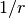

Classifier¶
- See IDL definition for detailed specification.
- See Methods for detailed description of algorithms used in this server.
Configuration¶
Configuration is given as a JSON file. We show each filed below:
- method
Specify classificaiton algorithm. You can use these algorithms.
Value Method "perceptron" Use perceptron. "PA" Use Passive Aggressive (PA). [Crammer06] "PA1" Use PA-I. [Crammer06] "PA2" Use PA-II. [Crammer06] "CW" Use Confidence Weighted Learning. [Dredze08] "AROW" Use Adaptive Regularization of Weight vectors. [Crammer09b] "NHERD" Use Normal Herd. [Crammer10]
- parameter
Specify parameters for the algorithm. Its format differs for each method. Note that adequate value for refularization_weight differ for each algorithm.
- perceptron
- None
- PA
- None
- PA1
regularization_weight: Sensitivity to learning rate. The bigger it is, the ealier you can train, but more sensitive to noise. It corresponds to  in the original paper [Crammer06].
(Float)
in the original paper [Crammer06].
(Float)- PA2
regularization_weight: Sensitivity to learning rate. The bigger it is, the ealier you can train, but more sensitive to noise. It corresponds to in the original paper [Crammer06].
(Float)- CW
regularization_weight: Sensitivity to learning rate. The bigger it is, the ealier you can train, but more sensitive to noise. It corresponds to  in the original paper [Dredze08].
(Float)
in the original paper [Dredze08].
(Float)- AROW
regularization_weight: Sensitivity to learning rate. The bigger it is, the ealier you can train, but more sensitive to noise. It corresponds to  in the original paper [Crammer09b]. (Float) - NHERD
regularization_weight: Sensitivity to learning rate. The bigger it is, the ealier you can train, but more sensitive to noise. It corresponds to in the original paper [Crammer10].
(Float)
- converter
Specify configuration for data conversion. Its format is described in Data Conversion.
- Example:
{ "method" : "AROW", "parameter" : { "regularization_weight" : 1.0 }, "converter" : { "string_filter_types" : {}, "string_filter_rules" : [], "num_filter_types" : {}, "num_filter_rules" : [], "string_types" : {}, "string_rules" : [ { "key" : "*", "type" : "str", "sample_weight" : "bin", "global_weight" : "bin" } ], "num_types" : {}, "num_rules" : [ { "key" : "*", "type" : "num" } ] } }
Data Structures¶
Methods¶
- service classifier
- int train(0: list<labeled_datum> data)¶
Parameters: - data – list of tuple of label and datum
Returns: Number of trained datum (i.e., the length of the data)
Trains and updates the model. labeled_datum is a tuple of datum and its label. This API is designed to accept bulk update with list of labeled_datum.
- list<list<estimate_result>> classify(0: list<datum> data)¶
Parameters: - data – list of datum to classify
Returns: List of list of estimate_result, in order of given datum
Estimates labels from given data. This API is designed to accept bulk classification with list of datum.